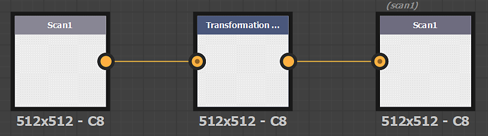
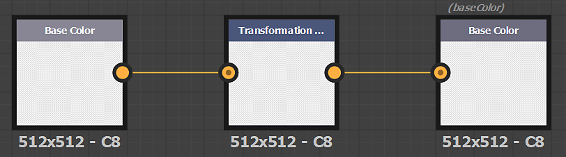
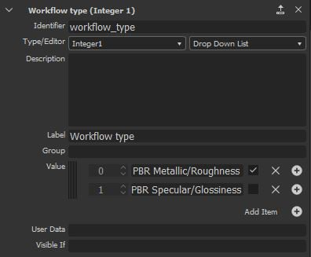

You can import filters made with Adobe Substance 3D Designer via the Import button in the Layer Stack actions.
Filters must be built in a specific way in Designer to work correctly once imported in Sampler.
The input and output nodes of the filter must have the identifier or usage defined.
It is possible to use either the usage or the identifier (the usage has the priority).
Export your filter as a Substance Archive file (.sbsar)
You can expose filter parameters to control the filter directly in Sampler. See how-to here

| Images name | Usage |
|---|---|
| Scan1 | scan1 |
| Scan2 | scan2 |
| ... | ... |

| Channel name | Usage |
|---|---|
| Base Color | basecolor |
| Diffuse | diffuse |
| Specular | specular |
| Specular Level | specularlevel |
| Metallic | metallic |
| Roughness | roughness |
| Glossiness | glossiness |
| Normal | normal |
| Height | height |
| Ambient Occlusion | ambientOcclusion |
| Opacity | opacity |
When creating a custom filter for Sampler, you need to add the following userdata in your Substance graph:
alchemist::type=filter;If in your package, you have one graph to process images (scan1 to scanX) and one graph to process material (PBR channels), Sampler is able to choose the correct graph depending where the filter is inserted in the layer stack.
On your "image" graph, add the following userdata:
alchemist::type=filter;alchemist::variation::type=multiOn your "material" graph, add the following userdata:
alchemist::type=filter;alchemist::variation::type=materialSpecific parameters are globally managed by the application. It's a way to use global parameters of the application, the project, the layer stack in your custom filters.
Control of the normal format over the application. Set to DirectX in Sampler
parameter identifier: normalformat, normal_format, $normalformat, $normal_format
When you want to modify images (scan1 to scanX), you can use the number of images in the layer stack by using the Image Count parameter.
parameter identifier: input_count
parameter type: integer1
If you want to display a material slot in the layer stack like the atlas scatter or the splatter:
If you want to display/hide some parameters based on the workflow of your project (PBR Metalic/Roughness or PBR Specular/Glossiness), you can the Workflow Type parameter
parameter identifier: workflow_type
parameter_type: integer1, dropdown list
options:
